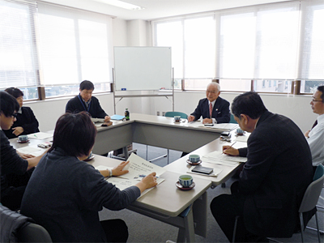

2012年度 福祉担当者学習会 報告
- 【日 時】
- 2月20日（水）14：00～15：30
- 【場 所】
- 埼玉県生協連 会議室
- 【出席者】
- 7人（さいたまコープ、パルシステム埼玉、生活クラブ生協、医療生協さいたま、事務局）
第3回目の福祉担当者会議では、埼玉県内での“見守り活動”の事例研究として、草加市松原団地で見守り活動をすすめている、NPO法人松原団地見守りネットワーク理事長の布施郡二氏に、同団体の活動と課題についてお話しいただき、交流しました。

1．松原団地と見守りネットワーク
（1）高齢化が進む松原団地
- 昭和30年代後半に324棟5,926 戸の団地が建設され、昭和37年から入居が開始されました。
- 東京オリンピック開催前後に、埼玉県内にたくさんの公団住宅（2DK）が建設されました。
- 高齢化率は、草加市は19.1％。松原団地は、40％以上です。
（2）見守りネットワークの設立
- 平成17年度に13人の独り暮らしの方の孤独死が発生しました。
自治会、民生委員、ボランティア団体等での実態把握が困難な現実
介護保険や自立支援のセーフティネットから外れる人への支援の問題の顕在化。 - 平成23年4月、松原団地自治会、地域包括支援センター、民生委員・児童委員協議会、社会福祉協議会、野ばらの会で松原団地見守りネットワークを設立。
平成24年7月、法人格（NPO法人）取得
2．見守りネットワークの活動
（1）孤独死対策
- 週1回の電話連絡、月1回の訪問活動（500円のチケット）
※遠方に住む家族からの「感謝」の声も届いています。 - 見守り専用電話の設置
- 草加市広報の松原団地全戸配布（約4,200戸）、ポストの確認とあいさつ
（2）支えあい事業
- 活動委員77人、利用会員148人（利用条件 松原団地居住者）
- 生活支援サービス事業（利用料 1時間500円）
家事援助、外出支援、代行支援、子育て支援、活動支援 - 2ヶ月に1回、ニュース発行（松原団地全戸）
（3）ふれあい喫茶
- 閉じこもりの防止、地域の憩いの場
- 週3回利用（出前の要請もあります）
- コーヒー1杯100円（おかわり自由）
（4）課題
- 財政問題（500円の利用券で運営は困難）。
- 孤立死が発生（他の団体や地域住民との連携の必要性）
- 活動委員を対象に推進委員会を毎月開催（参加問題）
- 大学生の参加もありますが、「大学」が関わっているわけではありません（個人の関わり）。
小学生や中学生の関わり（社会福祉協議会の取り組みで、小学校で高齢者と一緒の給食はありますが） - ボランティアは、人を助けながら、自分自身が一番元気になれるように。